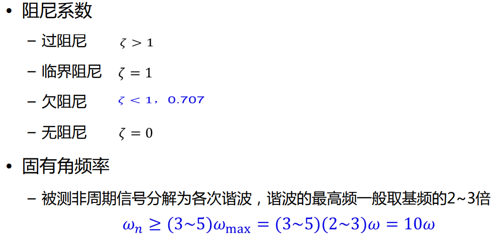
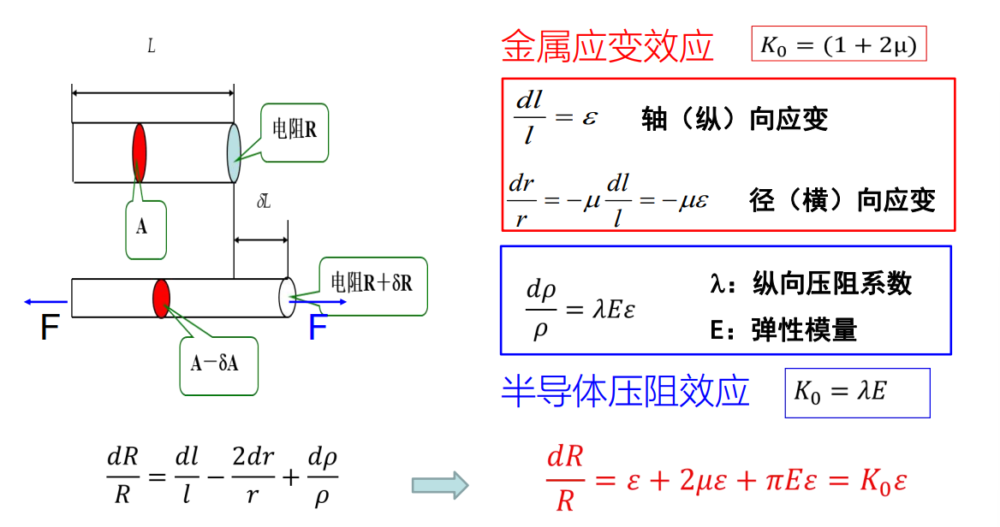

传感器复习随笔
本文最后更新于：6 个月前
1 前言
- 【第一章】概述部分 | 传感器的分类和国内外发展现状
- 【第二章】传感器基本特性 | 静态特性、动态特性、标定与校准
// 以下章节细分到具体传感器类型的都会包括：工作原理、测量电路、基本应用 - 【第三章】R 电阻式传感器 | 应变式原理、压阻效应、三种电桥测量方法
- 【第四章】L 电感式传感器 | 变磁阻式、差动变压式、电涡流式
- 【第五章】C 电容式传感器 | 变极距式、差动变极距式
- 【第六章】压电式传感器 | 压电效应、三种压电材料、特性参数、电压放大和电荷放大器（测量电路）
- 【第七章】磁敏式传感器 | 磁电感应式、霍尔式
- 【第八章】热电式传感器 | 热电偶、热电阻、热敏电阻、热释电式
- （不考）【第九章】光电式传感器 | 光电效应、光电器件、CCD、光电编码器
考试题型：选填 + 客观题，客观题为给出一个场景，利用所学传感器给出测量方案。
2 【第一章】概述部分
这张图会贯穿后面所有具体的传感器章节，举例如下【第四章】：
2.1 传感器的定义
能感受被测量并按照一定的规律转换成可用输出信号的器件或装置，通常由敏感元件和转换元件组成。
敏感元件（Sensing Element） 指的是能够直接感受或响应被测量的部分；
转换元件（Transducing Element） 指能将敏感元件的输出转换为适于传输或测量的电信号部分；
3 【第二章】传感器通用概念
3.1 静态特性
主要就是若干概念：
静态信号与静态特性 不随时间变化；静态信号作用下的输入输出关系；
量程 最小到最大输入量的范围；
分辨率（Resplution） 能感知到的最小输入信号的增量；（灵敏度越高，分辨率越好，也就是越小）
线性度 ( Linearity ) 输入输出间的线性关系程度，理想情况为纯线性关系，指标为非线性误差 ，计算公式为：
其中： 为最大偏差， 为输出的满量程值（Full Scale）
灵敏度（Sensitivity） 稳态情况下输出变化量比上输入变化量（某点斜率），平均灵敏度为拟合直线的斜率
迟滞（Hysteresis） 又叫回程误差，就是正反行程中曲线不一致，其指标与线性度指标类似，不做赘述
重复性（Repeatability） 多次测试中曲线的一致程度，指标也类似，不做赘述
漂移（Drift） 输入不变，输出随时间变化，有零飘（结构老化）和温飘（环境变化）两种
3.2 动态特性
定义： 指传感器对动态激励的响应特性
3.2.1 基本数学模型：LTI
线性时不变系统，LTI（Linear Time-Invariant），常用来描述动态特性。
其中，单项式的系数用于描述传感器的动态特性，由工作原理、结构、参数等等因素确定。课程中只需要了解零阶到二阶即可。
3.2.1.1 零阶：
3.2.1.2 一阶
3.2.1.3 二阶
3.2.1.4 动态参数的选择

3.3 作业
一阶系统的一般表达式为：
将题目式子向这个方向化容易读出时间常数和静态灵敏度。一阶系统的计算式：
若题目给出若干情况的取值，代进去这个式子算，可以得出解出时间常数和静态灵敏度
二阶的常用参数：
（虽然我觉得传感器的期末小测程度应该不会要算二阶）
4 【第三章】电阻式传感器
4.1 工作原理
❗
4.1.1 应变与应力
（轴向）应变 指的是轴向形变比上原先长度轴向应变和径向应变的关系如下：
其中： 为电阻丝材料的泊松比，通常为 0.3 左右
应力 指的是单位面积的力
4.1.2 电阻
❗定义式：
其中： 为电阻率
应变效应与压阻效应：

压阻效应：半导体电阻应变片的工作原理，单晶半导体材料沿某一轴向受到外力作用时，其电阻率发生变化的现象
4.2 测量电路
4.2.1 直流电桥
相邻两电阻的比值相等， 视作开路，则输出电压 为 0；若相邻电阻的比值设作 ，则有：
❗则灵敏度定义为
❗若为单桥臂时, 若要使得 最大, 则 此时灵敏度为
而在实际情况中有非线性误差：
❗计算方法：
❗同样的, 单桥臂的:
非线性误差改进方法有二：
半桥差动： 将 和 都作为可变电阻：
❗灵敏度为单臂的两倍：
❗没有非线性误差
全桥差动： 四个电阻都作为可变电阻：

❗灵敏度为单臂的四倍：
❗没有非线性误差
4.3 典型应用
电阻式差压传感器；称重传感器；
5 【第四章】电感式传感器
电磁感应定律：当穿过线圈回路的磁通量发生变化时，线圈回路中的感生电动势ε的大小和穿过回路的磁通量Φ变化率成正比。
5.1 变磁阻电感式传感器
5.1.1 磁阻
❗仿照电阻的定义，磁阻有以下定义式：
其中: 为磁导率, 为长度
❗由磁阻出发，一段线圈的电感量定义为：
5.1.2 工作原理
❗变气隙厚度式自感传感器：
当衔铁上下移动的时候，灵敏度有以下关系：
非线性误差有:
改进方法：
螺线管式自感传感器：
5.1.3 测量电路
5.1.3.1 交流电桥
差动自感式交流电桥：
变压器式交流电桥：
输出电压的计算公式都是一样的。
5.2 差动变压器电感式传感器
5.2.1 工作原理
❗两个二次绕组反向串接，以差动方式输出
与上一节的对比：
5.2.2 测量电路
输出为电压，直接测就完了，无非就加一个放大器
5.3 电涡流电感式传感器
5.3.1 工作原理
电涡流效应： 感生电流的磁通总是力图阻碍引起感生电流的磁通变化，此磁场会反作用于原磁场，电涡流的产生导致励磁线圈的电感、品质因数、阻抗等参数发生变化。
5.3.2 测量电路
输出的是阻抗，直接用前述的交流电桥即可
6 【第五章】电容式传感器
6.1 工作原理
电容定义：
变极距型电容式传感器:
基础被测量为电容, 单极板的灵敏度为:
差动式的灵敏度为:
6.2 额外的两种测量电路

7 【第六章】压电式传感器
7.1 工作原理
基于正逆压电效应：
- 正压电效应 机械形变 -> 内部产生极化现象 -> 产生内电场
- 逆压电效应 施加电场 -> 引起内部正负电荷中心的相对位移 -> 产生机械形变
压电材料：
- 石英晶体
- 陶瓷 锆钛酸铅
- 半导体硫化锌
7.2 测量电路
7.3 典型应用
超声波：发送：使用了逆压电效应（外加电场产生振动发出超声波）接收：使用了正压电效应（接收机械振动波，进行电气输出）
8 【第七章】磁敏式传感器
8.1 磁电感应式传感器
8.2 霍尔式传感器
霍尔效应：半导体或金属薄片置于磁场中，当有电流流过时，在垂直于磁场和电流的方向上会产生电动势。
9 热电式传感器
9.1 热电偶
热电效应：两种不同材质的导体 A&B 首尾焊接，两个焊接点有温差时，便产生热电流测量端：焊接一起的两个导体显示端：冷端
分度表：
中间导体定律在热电偶测温回路内接入中间导体（第三种导体），只要第三种导体的两端温度相同，对回路的总热电势没有影响。
中间温度定律热电偶回路的两接点（温度为 T、T 0）间的热电势，等于热电偶在 T、Tn 时的热电势与在 Tn、T 0 时的热电势的代数和。
9.2 热电阻
测量电路：二线制：短距离测量，低精度
三线制，远距离工业测量，一般精度
四线制，实验室测量，高精度
9.3 热敏电阻
电阻值随温度显著变化，灵敏度高出热电阻 1~2 个数量级。
9.4 热释电
热释电效应由于温度变化而产生极化电荷的现象
热释电型传感器：
当红外辐射照射到已经极化的铁电体薄片表面上时引起薄片温度升高，使其极化强度降低，表面电荷减少，这相当于释放一部分电荷，所以叫做热释电型传感器。
如果将负载电阻与铁电体薄片相连，则负载电阻上便产生一个电信号输出。输出信号的强弱取决于薄片温度变化的快慢，从而反映出入射的红外辐射的强弱，热释电型红外传感器的电压响应率正比于入射光辐射率变化的速率。当铁电体薄片的温度达到平衡值时，表面电荷达到平衡浓度，不再释放电荷，将无输出信号。因此，热释电型传感器用于测量动态信号。